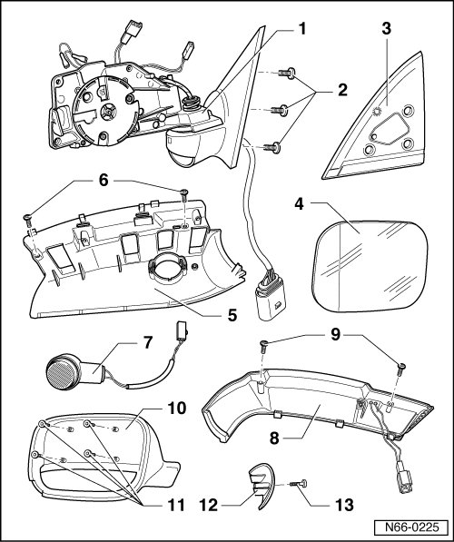

Exterior Mirror, through 10.2006 Overview
Exterior Mirror, through 10.2006
Exterior Mirror Assembly Overview

1 Mirror base plate
2 Bolt
• Quantity: 3
• 8 Nm
3 Insulation
4 Mirror glass
• Removing, refer to --> [ Mirror Glass ] Exterior Mirror, through 10.2006
5 Assembly component
• For turn signal and entry light.
6 Bolt
• Quantity: 2
• 1 Nm
7 Entry lamp
• Removing, refer to --> [ Entry Light ] Exterior Mirror, through 10.2006
8 Turn signal
• Removing, refer to --> [ Side Turn Signal ] Exterior Mirror, through 10.2006
9 Bolt
• Quantity: 2
• 1 Nm
10 Mirror housing
• Removing, refer to --> [ Mirror Housing ] Exterior Mirror, through 10.2006
• Material - ABS
11 Bolt
• Quantity: 4
• 1 Nm
12 Cap
13 Bolt
• 1 Nm